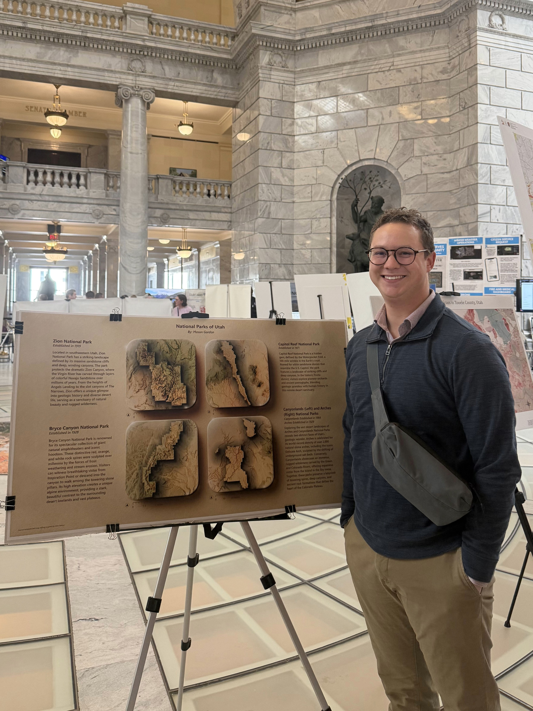

Mason Gordon
Master of Science in Spatial Data Science Portfolio
Welcome
Hello! I am a Spatial Data Scientist and GIS specialist with a passion for converting complex spatial data into actionable, real-world insights. During my Masters of Science in Spatial Data Science, I developed advanced skills in remote sensing, spatial machine learning, database management, and automated data pipelines. The projects featured on this site range from automated air quality dashboards to time-series wildfire regrowth tracking, and were completed for various classes throughout the masters program. These projects showcase the core technical spatial skills I have built throughout the program. I hope you enjoy seeing the work I have completed during my time at the University of Utah.
Featured Maps

